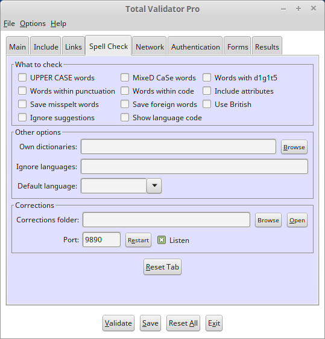

Introduction
All of the options that appear on the Spell check tab of the Pro tool are described below. For a further explanation of what these options mean and how to use them, see the Spell checking page.

 top
topWhat to check
By default certain types of words are not spell checked. This includes words that are all upper case (e.g. NASA), words that are mixed case (e.g. SpellCheck), words that contain digits (e.g. Homer6), words surrounded by characters other than quote marks (e.g. <table>), and words within <samp>, <code>, and <kbd> tags. Use the 'UPPER CASE words', 'MixeD CaSe words', and so on, options to include these types of words in the spell checking.
Words within attributes are also not normally checked. However you can use the 'Include attributes' option to spell check text within displayable attributes such as: alt, title, summary, label, prompt, and standby.
Save misspelt words
Using this option has the same effect as clicking on every misspelt word on the results pages: It will save all of the words not found by the spell checker into separate dictionary files for each language code.
These files are saved to the Corrections folder and so may be used for future validations. So you may wish to edit them before they are used. When editing note that a dictionary file must be a plain text file consisting of one word per line, with no duplicates, and must be saved using UTF-8 encoding.
Save foreign words
Instead of ignoring any words for unrecognised language codes, all of the words in these sections will be saved into separate dictionary files for each unrecognised language code. You can then point to these files using the Own dictionaries option, and they can then be used to spell check new languages.
These files are saved to the Corrections folder, but you may wish to move them elsewhere to save them being overwritten. You may also wish to edit them before they are used, but please note that a dictionary file must be a plain text file consisting of one word per line, with no duplicates, and must be saved using UTF-8 encoding.
Note that for most glyph-based languages, like Chinese, all the words are upper case. So you may need to use the 'UPPER CASE words' option to ensure that words are saved.
Use British
By default any English words (language codes starting with 'en'), except those marked as British (en-GB), will be spell checked using the American (en-US) dictionary.
If the majority of the English on your site is closer to British, then use this option to reverse the default: So that any English words (language codes starting with 'en'), except those marked as American (en-US), will be spell checked using the British (en-GB) dictionary.
Ignore suggestions
When a word is not found in the dictionary a list of suggestions is normally presented in the results. But with this option you can suppress this list.
Show language code
When you click on misspelt words on the results pages they will be saved to a dictionary for the specific language the word was spell-checked with. If your pages have multiple languages on them it may not always be clear which dictionary will be used. So use this option to display the language code used for the spell checking next to the word in the results.
Own dictionaries
This is a comma-separated list of dictionaries. These will normally be for 'foreign' languages other than the ones supplied with the tool (English, French, German, Italian, Spanish). But they may also be for specific language country codes or even be used to replace the internal dictionaries.
Note that dictionary files must be plain text files consisting of
one word per line, with no duplicates, and must be saved using UTF-8 encoding.
Only file names starting with a valid language code and ending with .dic will be used and the
language code prefix itself must end with a ".". For example: fr-ca.dic or pt-PT.mydictionary.dic,
but not fr-CA nor fr-CA-dic.
The language code is treated as case-insensitive so if you supply
fr-ca.dic and fr-CA.dic, only one of these will be used (no guarantee which).
Any files that match the names of the internal ones, will be used instead of them. For example: fr.dic, en-GB.dic
Ignore languages
This is a comma-separated list of language codes to ignore when checking. All words within the section of the pages matching these language codes will be ignored. This includes words that would normally be checked using an internal dictionary or those matching languages specified using the Own dictionaries option.
Default language
When checking each page the tool will try to determine the default language to use to check words. It first checks the <html> tag for a 'lang' attribute, failing that it looks for 'content-language' within a <meta> tag, and finally for a 'content-language' HTTP header. If no default can be found then words that are not specifically marked with a language code will be ignored.
You can use this option to enter a language code to use as the default when none can be found. The drop-down lists the internal languages that we provide, but you can enter any valid language code here. But note that unless there is a dictionary for this language (internal or specified with Own dictionaries) then matching words will still not be checked.
Corrections folder
When spelling mistakes are highlighted on the results pages but you think that the words are spelt correctly, you can add these words to correction dictionaries by clicking on them. These dictionaries are automatically be saved the the 'Corrections folder' and automatically used the next time you run a spell check.
By default the 'Corrections folder' is a sub-folder called 'dics' within the folder where all the results pages are saved. But you can use this option to select another folder to use to store corrections to and read corrections from.
Because the tool listens for spell check corrections as soon as it is started, if you wish to change this folder you must restart the tool or click the 'Restart' button next to the 'Port' field to have any affect.
Port
As soon as you start the Pro tool it will start to listen on the 'Port' specified for clicks on results pages. The port is set to 9890 by default but can be any number in the range 1-65535, but you must choose a number that does not conflict with any other service on your PC otherwise an error message will appear when you start the tool.
Because the tool listens for spell check corrections as soon as it is started, if you wish to change the 'Port' you must restart the tool or click the 'Restart' button next to the 'Port' field to have any affect.
Also note that when you run a validation the value of the 'Port' is embedded in the results pages. So if you change the value of the 'Port' you must re-run your validation or when you click on the results it will not find the Pro tool.
Finally, if you do not wish to use this feature then you can turn it off using the 'Listen' checkbox.